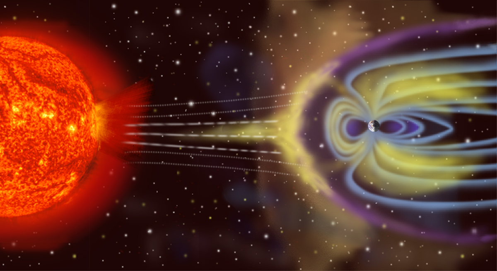
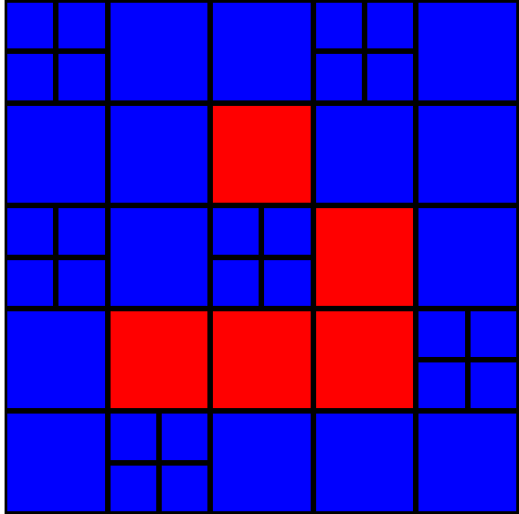
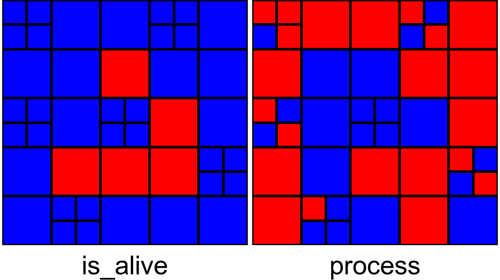
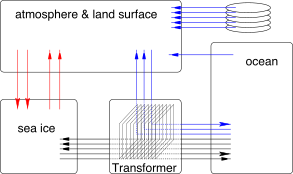

__ __ __ _ _
From:| | |to:| |_|_|or back
|__|__| |__|_|_|



template <class... Types> class Print;
template <class First, class... Rest> class Print
cout << typeid(First).name() << " ";
Print<Rest...>()();
template <class Last> class Print
cout << typeid(Last).name() << endl;
Print<char, int, double, vector<char>>()();
Cell<Is_Alive, Live_Neighbors> cell1, cell2;
struct Is_Alive { using data_type = bool; };
struct Live_Neighbors { using data_type = int; };
template <class Var> class Cell<Var>{
typename Var::data_type data;
typename Var::data_type& operator[](Var&)
return this->data;
}
template <
class Current, class... Rest
> class Cell <Current, Rest...>
: public Cell<Rest...>
{
typename Current::data_type data;
using Cell<Rest...>::operator[];
typename Current::data_type& operator[](Current&)
return this->data;
}
auto& cell_data = grid[cell_id];
if (cell_data[Live_Neighbors()] == 3) {
cell_data[Is_Alive()] = true;
} else if (cell_data[Live_Neighbors()] != 2) {
cell_data[Is_Alive()] = false;
}
template <class Is_Alive_T, ...> solve(...){
...
auto& cell_data = grid[cell_id];
if (cell_data[Live_Neighbors_T()] == 3) {
cell_data[Is_Alive_T()] = true;
} else if (cell_data[Live_Neighbors_T()] != 2) {
cell_data[Is_Alive_T()] = false;
}
...
}
using Cell = gensimcell::Cell<
gol::Is_Alive, gol::Live_Neighbors,
advection::Density, advection::Density_Flux,
...
>;
int main() {
...
gol::solve<
Cell, gol::Is_Alive, gol::Live_Neighbors
>(inner_cells, grid);
advection::solve<
Cell, advection::Density,
advection::Density_Flux, advection::Velocity
>(time_step, inner_cells, grid);
...
}
particle::solve< particle::solve<
Cell, Cell,
particle::Velocity, => advection::Velocity,
... ...
>(dt, cells, grid) >(dt, cells, grid)
static void set_transfer_all(tribool, vars...) void set_transfer(bool, vars...)
std::tuple<void*, int, MPI_Datatype>
class Cell<
Current_Variable,
Rest_Of_Variables...
> {
public:
get_mpi_datatype() {
...
this->get_mpi_datatype_impl(...);
...
}
protected:
get_mpi_datatype_impl(...) {
...
...
protected:
get_mpi_datatype_impl(
index, addrs&, cts&, types&
) {
if (transferred) {
... // fill next index of array
index++;
}
Cell<
Rest_Of_Variables...
>::get_mpi_datatype_impl(index, ...);
}
}
template <class All_Variables...> class Cell {
public:
template <
class Requested_Variables...
> std::tuple<
Requested_Variables&...
> operator(const Requested_Variables&...) {
std::tuple<Requested_Variables&...> ret_val;
...
}
}
Questions?
Financial support by NASA Postdoctoral Program